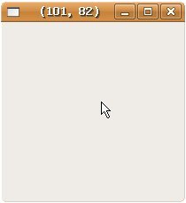

事件遮罩決定了一個Widget會接收到哪些事件，不同的Widget會有不同預設的事件遮罩，您可以使用gtk_widget_set_events()來設定事件遮罩：
void gtk_widget_set_events(GtkWidget *widget, gint events);
使用gtk_widget_set_events()要特別小心，因為您直接改變了Widget的事件遮罩，不小心的話有可能破壞了Widget的功能，您可以使用gtk_widget_events()增加一些特別事件的事件遮罩：
void gtk_widget_add_events(GtkWidget *widget, gint events);
gtk_widget_set_events()或gtk_widget_events()必須在Widget實現之前呼叫才有作用，events是GdkEventMask的enum：
typedef enum
{
GDK_EXPOSURE_MASK = 1 << 1,
GDK_POINTER_MOTION_MASK = 1 << 2,
GDK_POINTER_MOTION_HINT_MASK = 1 << 3,
GDK_BUTTON_MOTION_MASK = 1 << 4,
GDK_BUTTON1_MOTION_MASK = 1 << 5,
GDK_BUTTON2_MOTION_MASK = 1 << 6,
GDK_BUTTON3_MOTION_MASK = 1 << 7,
GDK_BUTTON_PRESS_MASK = 1 << 8,
GDK_BUTTON_RELEASE_MASK = 1 << 9,
GDK_KEY_PRESS_MASK = 1 << 10,
GDK_KEY_RELEASE_MASK = 1 << 11,
GDK_ENTER_NOTIFY_MASK = 1 << 12,
GDK_LEAVE_NOTIFY_MASK = 1 << 13,
GDK_FOCUS_CHANGE_MASK = 1 << 14,
GDK_STRUCTURE_MASK = 1 << 15,
GDK_PROPERTY_CHANGE_MASK = 1 << 16,
GDK_VISIBILITY_NOTIFY_MASK = 1 << 17,
GDK_PROXIMITY_IN_MASK = 1 << 18,
GDK_PROXIMITY_OUT_MASK = 1 << 19,
GDK_SUBSTRUCTURE_MASK = 1 << 20,
GDK_SCROLL_MASK = 1 << 21,
GDK_ALL_EVENTS_MASK = 0x3FFFFE
} GdkEventMask;
事件遮罩與事件的對應如下（取自 Events 表格三）：
| 遮罩
|
事件類型
|
|
GDK_EXPOSURE_MASK
|
GDK_EXPOSE
|
|
GDK_POINTER_MOTION_MASK
|
GDK_MOTION_NOTIFY
|
|
GDK_POINTER_MOTION_HINT_MASK
|
N/A
|
|
GDK_BUTTON_MOTION_MASK
|
GDK_MOTION_NOTIFY
(滑鼠按鈕按下)
|
|
GDK_BUTTON1_MOTION_MASK
|
GDK_MOTION_NOTIFY
(滑鼠按鈕1按下)
|
|
GDK_BUTTON2_MOTION_MASK
|
GDK_MOTION_NOTIFY
(滑鼠按鈕2按下)
|
|
GDK_BUTTON3_MOTION_MASK
|
GDK_MOTION_NOTIFY
(滑鼠按鈕3按下)
|
|
GDK_BUTTON_PRESS_MASK
|
GDK_BUTTON_PRESS,
GDK_2BUTTON_PRESS,
GDK_3BUTTON_PRESS
|
|
GDK_BUTTON_RELEASE_MASK
|
GDK_BUTTON_RELEASE
|
|
GDK_KEY_PRESS_MASK
|
GDK_KEY_PRESS
|
|
GDK_KEY_RELEASE_MASK
|
GDK_KEY_RELEASE
|
|
GDK_ENTER_NOTIFY_MASK
|
GDK_ENTER_NOTIFY
|
|
GDK_LEAVE_NOTIFY_MASK
|
GDK_LEAVE_NOTIFY
|
|
GDK_FOCUS_CHANGE_MASK
|
GDK_FOCUS_IN, GDK_FOCUS_OUT
|
|
GDK_STRUCTURE_MASK
|
GDK_CONFIGURE,
GDK_DESTROY, GDK_MAP, GDK_UNMAP
|
|
GDK_PROPERTY_CHANGE_MASK
|
GDK_PROPERTY_NOTIFY
|
|
GDK_VISIBILITY_NOTIFY_MASK
|
GDK_VISIBILITY_NOTIFY
|
|
GDK_PROXIMITY_IN_MASK
|
GDK_PROXIMITY_IN
|
|
GDK_PROXIMITY_OUT_MASK
|
GDK_PROXIMITY_OUT
|
|
GDK_SUBSTRUCTURE_MASK
|
對子視窗接收 GDK_STRUCTURE_MASK 事件
|
|
GDK_ALL_EVENTS_MASK
|
所有事件 |
舉個實際的例子來說，GtkWindow預設是不接收滑鼠移動事件，您要使用gtk_widget_events()增加GDK_POINTER_MOTION遮罩，才可以捕捉滑鼠移動事件，例如下面的程式在滑鼠於視窗中移動時，將在標題列中顯示目前的座標值：
#include <gtk/gtk.h>
gboolean motion_event_handler(
GtkWidget *widget, GdkEventMotion *event, gpointer data) {
char pos[20];
sprintf(pos, "(%d, %d)", (int) event->x, (int) event->y);
gtk_window_set_title(GTK_WINDOW(widget), pos);
return FALSE;
}
int main(int argc, char *argv[]) {
GtkWidget *window;
gtk_init(&argc, &argv);
window = gtk_window_new(GTK_WINDOW_TOPLEVEL);
g_signal_connect(GTK_OBJECT(window), "destroy",
G_CALLBACK(gtk_main_quit), NULL);
gtk_widget_add_events(window, GDK_POINTER_MOTION_MASK);
g_signal_connect(GTK_OBJECT(window), "motion_notify_event",
G_CALLBACK(motion_event_handler), NULL);
gtk_widget_show(window);
gtk_main();
return 0;
}
一個執行的畫面如下所示：

|
|